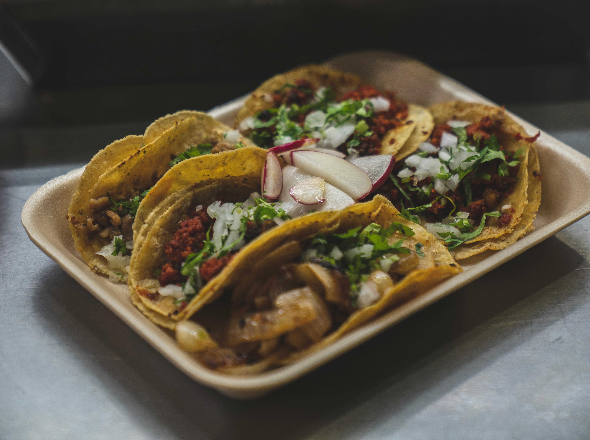

Quick And Easy Lunch Ideas

Beef Tacos
Ingredients
- 1 small onion, diced
- 500g good-quality beef mince
- 2 tbsp cumin
- 1 tbsp coriander
- 1 tsp black peppercorns
- 1 tbsp paprika
- 2 tsp cornflour
- 1 lime, juiced, plus wedges to serve
- 1 avocado
- 1 tomato, chopped into small chunks
- small tortilla wraps
Read more
Method
- Tip 500g beef mince into a bowl with 1 small diced onion and 1 egg, then mix.
- Divide the mixture into four. Lightly wet your hands. Carefully roll the mixture into balls, each about the size of a tennis ball.
- Set in the palm of your hand and gently squeeze down to flatten into patties about 3cm thick. Make sure all the burgers are the same thickness so that they will cook evenly.
Read more

Cheese beef burger
Ingredients
- 1 small onion, diced
- 500g beef mince
- 1 egg
- 1 tbsp vegetable oil
- 4 burger buns
- All or any of the following to serve: sliced tomato, beetroot, horseradish sauce, mayonnaise, ketchup, handful iceberg lettuce, rocket, watercress
Read more
Method
- Tip 500g beef mince into a bowl with 1 small diced onion and 1 egg, then mix.
- Divide the mixture into four. Lightly wet your hands. Carefully roll the mixture into balls, each about the size of a tennis ball.
- Set in the palm of your hand and gently squeeze down to flatten into patties about 3cm thick. Make sure all the burgers are the same thickness so that they will cook evenly.
- Put on a plate, cover with cling film and leave in the fridge to firm up for at least 30 mins.
- Heat the barbecue to medium hot. Lightly brush one side of each burger with vegetable oil.
- Place the burgers, oil-side down, on the barbecue. Cook for 5 mins until the meat is lightly charred. Dont move them around or they may stick.
- Oil the other side, then turn over using tongs. Dont press down on the meat, as that will squeeze out the juices.
- Cook for 5 mins more for medium. If you like your burgers pink in the middle, cook 1 min less each side. For well done, cook 1 min more.
- Take the burgers off the barbecue. Leave to rest on a plate so that all the juices can settle inside.
- Slice four burger buns in half. Place, cut-side down, on the barbecue rack and toast for 1 min until they are lightly charred. Place a burger inside each bun, then top with your choice of accompaniment.
Read more

pork and chicken skewers
Ingredients
- 200g boneless chicken breast
- 200g pork fillet
- 1 tbsp fish sauce
- small bunch coriander, chopped (optional)
- cooked rice or pitta, to serve
Method
- Cut the pork and chicken into cubes. Heat the pan over a low heat and add the fish sauce and cool. Tip in the pork and chicken and mix well so that all the cubes are covered in sauce.
- Heat the barbecue. If you are using coals, wait until they turn white. If you are indoors, heat a griddle pan. Thread the pork and chicken onto skewers
- Barbecue or griddle the skewers for 3-4 mins each side (you may need to cook them for longer if griddling). Sprinkle with coriander, if you like, then serve with rice or slide into pitta breads.
Read more

Chicken wrap
Ingredients
- 1 chicken breast
- squeeze juice 0.5 lime
- 1 garlic clove, chopped
- 2 wraps
- 1 tsp olive oil
- 1 avocado
- a few sprigs coriander, chopped
- ½ tsp mild chilli powder
Read more
Method
- Mix the chicken with the lime juice, chilli powder and garlic.
- Heat the oil in a frying pan then fry the chicken for a couple of mins it will cook very quickly so keep an eye on it. Meanwhile, warm the wraps following the pack instructions or, if you have a gas hob, heat them over the flame to slightly char them. Do not let them dry out or they are difficult to roll.
- Squash half an avocado onto each wrap, add the peppers to the pan to warm them through then pile onto the wraps with the chicken, and sprinkle over the coriander. Roll up, cut in half and eat with your fingers.